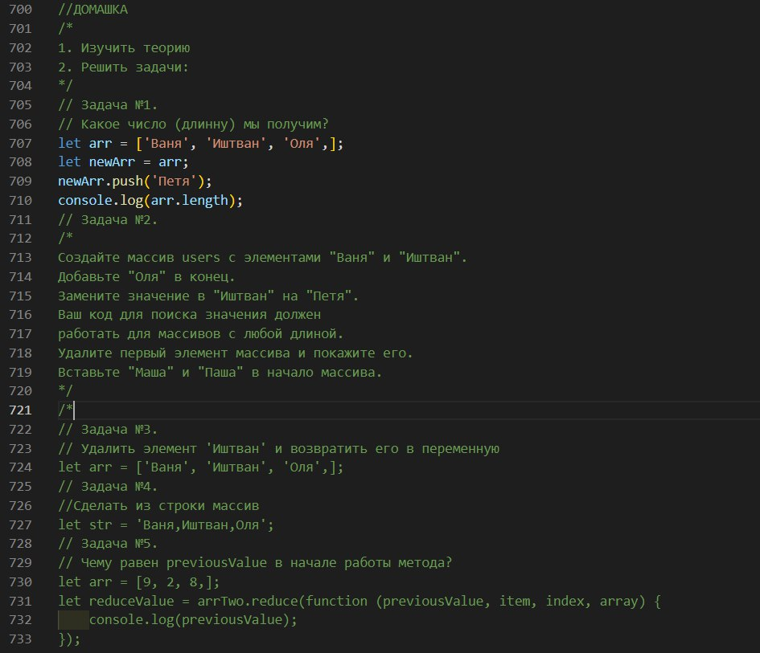

Привет!
Завдання №1. Функції в JAVASCRIPT. Стрілочні функції, рекурсія, планування: setTimeout и setInterval.
- Першим в консоль потрапить Коля, тому що це поточний код який виконується в першу чергу. Лише після його виконання планувальник буде викликати функцію.
- Вірно. Функція є об'явленою, тому ми її можемо визвати з будь-якого місця програми.
- Не вірно. Це функціональний вираз, в якому функцію ми можемо викликати лише після його створення.
-
За допомогою функціонального виразу, ми можемо вирішити дану проблему. Об'явивши змінну за межами блоку, ми присвоюємо їй функцію. Після чого, функція може бути викликана за межами блоку(з будь-якого місця програми).
Завдання №2. Масиви в JAVASCRIPT. Методи масивів. Редагування, пошук, сортування.

- Довжина буде 4. Масив в змінній arr такий самий, як і масив в змінній newArr. Методом push ми додаємо ще один елемент до нашу масиву.
-
Завдання 2.
-
Завдання 3.
-
Завдання 4.
- Так як значення initial не задане, то previousValue буде рівний першому значенні в масиві, тобто 9.
Завдання №3. Document object model (DOM). Змінна HTML CSS. Атрибути та властивості.
-
Завдання 1.
-
Завдання 2.
-
Завдання 3.
- Через параметр вставки "beforeend" новий HTML-об'єкт буде доданий в кінець списку ul і буде третім дочірнім елементом.
Завдання №4. JavaScript розміри прокрутка і координати елементів на сторінці і вікна браузера.
-
Завдання 1.
-
Завдання 2.
-
Завдання 3.
- Корчи
- Йончи